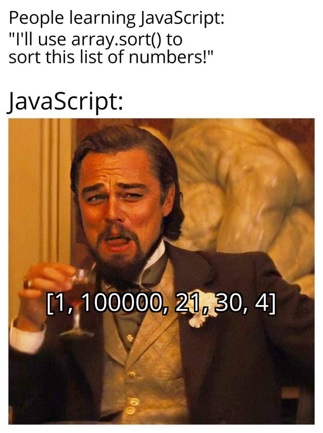

Thoughts and Expectations
I look forward to learning the basics of web programming throughout both sections of the course because this knowledge is crucial for the modern world software industry. I don’t expect to become a full-stack web developer after completing the course because it is simply not possible in such a short period of time. Still, I think that it could be a good start to gain the basic knowledge on which the new career could be built (who knows 🤓).
To be honest, I am a little bit suspicious about learning JavaScipt, because it is still incomprehensible to me how the whole web can rely on the language that was created within a week and then patched a thousand times. But my suspicion is not supported yet by any kind of programming in JavaScript experience, which is why I would rather be optimistic about learning a new programming language for the frontend and backend web development.
For the time being, I still consider the following meme to be somewhat scary, though…
